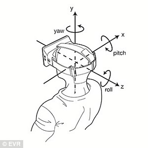
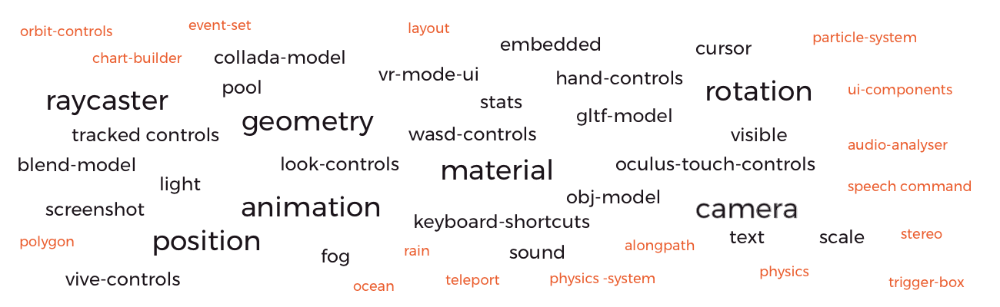
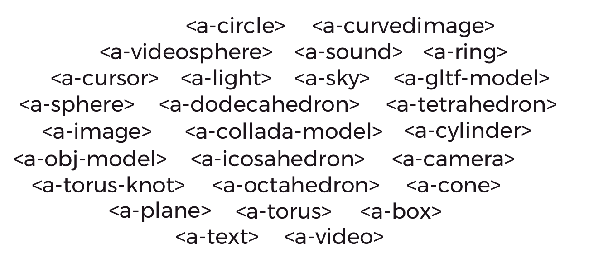
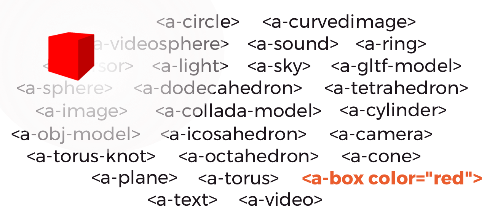

Bringing Virtual Reality to the Web with WebVR and A-Frame
Women Who Code Berlin Meetup 25.04.2017
By Stefanie Doll - @akastefie
Introduction
WebVR - The Basics
WebVR - The Basics

Goals of the WebVR API
- Detect VR devices and query their capabilities
- Check if the device supports the presentation mode
- Poll the device’s position and orientation
- Request confirmation from the user to enter VR mode
- Display and re-render imagery on the device
WebVR on different devices
Background
- WebVR API was conceived in 2014
- Javascript Web API
- W3C community group
- Google, Samsung, Microsoft and Mozilla currently iterating WebVR 1.0 API
- Editors Draft at W3C
Browser Support

Microsoft Edge
Chrome for Android
Firefox Nightly
Chromium

Samsung Internet

Oculus Carmel
Servo
WebVR Polyfill
Use WebVR together with other Web API's
WebVR for users
- Everybody is already connected
- No downloads, installs or additional hardware
- Cross Platform and Cross Device
- Everyone already owns a WebVR-Ready device
- Easy to share
WebVR for developers
- Opens up VR programming to a whole new group of developers
- Easily extensible - It's all Javascript
- Works well with existing libraries and frameworks
- Open Source, everyone can learn
- Rapid prototyping
WebVR vs. VR Headsets
- Not an either-or-situation
- VR in general is still a very young technology
-
more ideas
more concepts
more usecases
more users
more feedback
more experience
- Everyone benefits
Possible usecases
- Data & Object visualization
- Interactive Storytelling
- Artistic experiences
- 360 Videos and Images
- Gaming
- And more...
Sounds amazing!How do I get started?
A-Frame VR
An open source framework for building WebVR Experiences
- WebGL API
- WebVR Polyfill
- three.js
- Gamepad API integration
- Web Audio API integration
A-Frame VR
- Takes care of all the default tasks
- Allows you to write WebVR Content in a HTML-Like syntax
- Entity Component System
- Open and easy to customize
- For all skill levels
<a-scene>
Basic setup of repetitive tasks & components needed for 3D
- WebGL setup
- Canvas setup
- Default camera
- Default lightning
- Initializes scene rednering and re-rendering
<a-entity>
Empty container by default
Behaviour, appearance & functionality are added by components
Common usecases as primitives
Entities with component defaults
Common usecases as primitives
Entities with component defaults
Say "Hi" to Freddie!
Freddie in 9 lines of code
<html>
<head>
<script src="/aframe.min.js"></script>
</head>
<body>
<a-scene>
<a-circle src="sand.jpeg" rotation="-90 0 0" radius="300"></a-circle>
<a-sky src="sky.png"></a-sky>
<a-sphere radius="3" color="lime" position="0 3 -15" id="freddie">
<a-entity geometry="primitive: sphere; radius: 0.6" material="src: eye.jpg"
position="-1.1 0.5 2.8" rotation="95 0 0" id="left-eye" ></a-entity>
<a-entity geometry="primitive: sphere; radius: 0.6" material="src: eye.jpg"
position="1.1 0.5 2.8" rotation="95 0 0" id="right-eye"></a-entity>
</a-sphere>
</a-scene>
</body>
</html>
A-Frame Inspector (ctrl+alt+i)
A-Frame ecosystem
- Full access to three.js library
- Write your own components
- Integrate 3rd party Javascript libraries
- Works well on top of other libraries like Angular, React, Vue, jQuery, d3
- Contribute yourself
Contribute
Communityhttps://aframe.io/community/
Updateshttps://aframe.io/blog/
Examples
Oculus touch support just landed in A-Painter, go and give it a try! https://t.co/zolRp7Emry #aframevr #webvr #OculusRift pic.twitter.com/7ff4rf550w
— Fernando Serrano (@fernandojsg) April 24, 2017

Outlook
- W3C is currently working on specs for v2.0.0
- Browser Support is coming
- WebAR in the making
- More WebVR-Frameworks
- ReactVR was just released
Start playing, start building!
<html>
<head>
<script src="/aframe.min.js"></script>
</head>
<body>
</body>
</html>